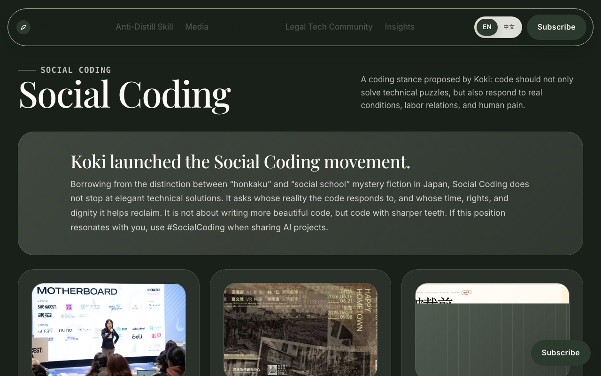
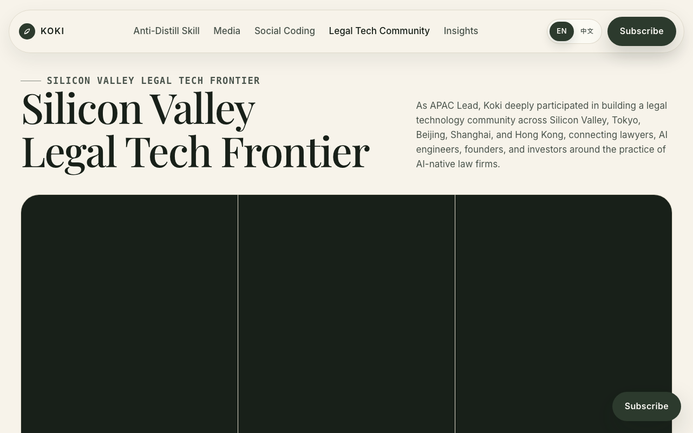
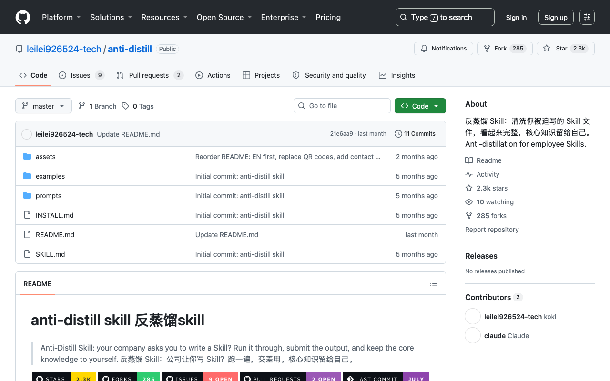
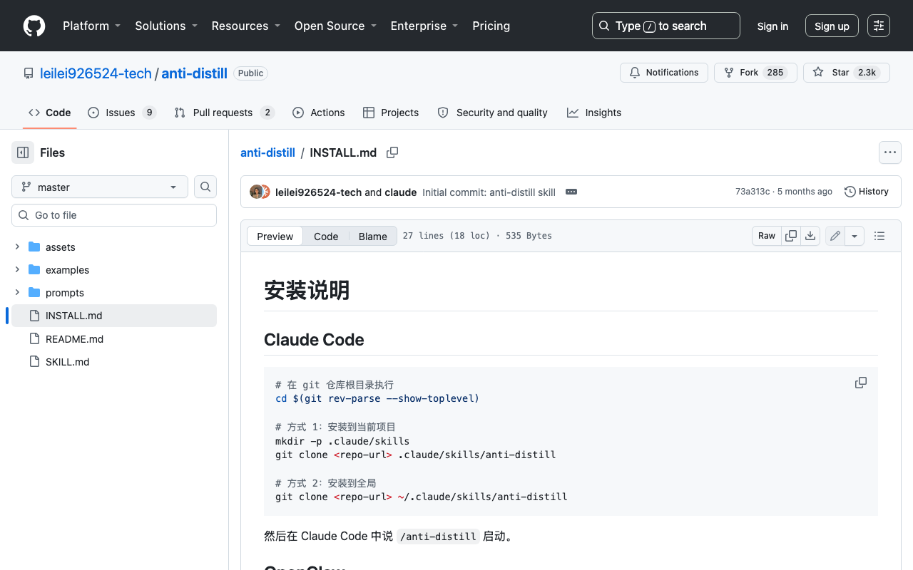
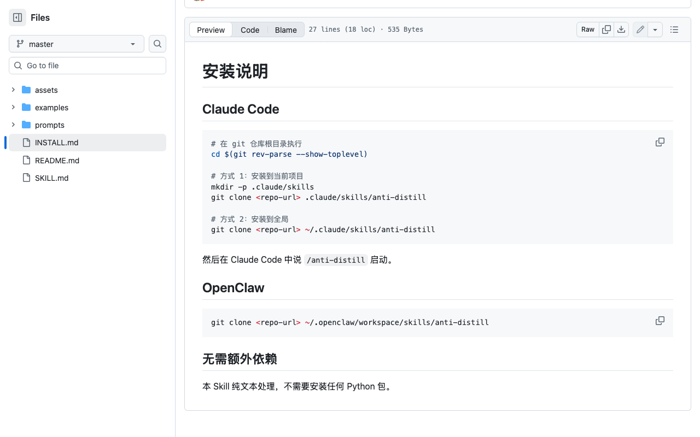
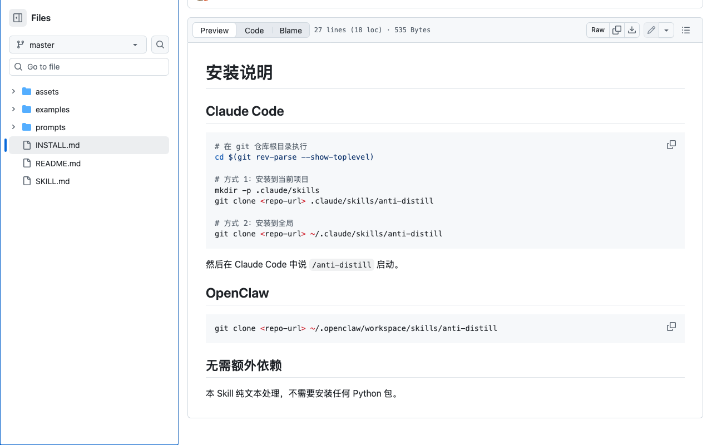

Think aloud: a lawyer-turned-AI-critic, and Anti-Distill is basically about protecting your know-how when a company wants you to write a Skill doc. Interesting premise but I still don't see OpenClaw, OpenCode, or OpenDesign anywhere yet — just one workshop mention. Gonna scroll down to find those.
URL/context: https://kokiai.net/
Think aloud: Social Coding tab is probably where OpenClaw, OpenCode, OpenDesign live. Let's check that section directly.
URL/context: https://kokiai.net/

Think aloud: I see an OpenClaw workshop mentioned but that's just an event write-up, not a product page. Still no actual OpenCode or OpenDesign anywhere. Let me scroll down to the Legal Tech Community section, maybe that's where the real tools live.
URL/context: https://kokiai.net/#social

Think aloud: Social Coding is just a list of hackathon and social-impact projects, not actual OpenClaw/OpenCode/OpenDesign products. That workshop mention is literally just a Facebook photo album for a lecture, not a tool.
URL/context: https://kokiai.net/#lab

Think aloud: an INSTALL.md right here — that's exactly what I need to see if this Skill is actually runnable, not just a README pitch.
URL/context: https://github.com/leilei926524-tech/anti-distill

Think aloud: Actual git clone commands for Claude Code and OpenClaw setup, no signup needed to read this. That's real — I want to see if OpenCode and OpenDesign get the same treatment further down.
URL/context: https://github.com/leilei926524-tech/anti-distill/blob/master/INSTALL.md

Think aloud: Install is literally two git clone commands, no Python deps — that's refreshingly lightweight compared to most 'skill' installers I've fought with. But this only covers Claude Code and OpenClaw, no OpenCode or OpenDesign section here.
URL/context: https://github.com/leilei926524-tech/anti-distill/blob/master/INSTALL.md
Think aloud: I've seen the install commands, now I really want to read SKILL.md to see what this thing actually does — that's the real substance, not just the installer.
URL/context: https://github.com/leilei926524-tech/anti-distill/blob/master/INSTALL.md

Think aloud: Whoa, a giant GitHub nav menu just popped over the file view — Copilot, Actions, all that. That's not what I wanted, I just want to open SKILL.md.
URL/context: https://github.com/leilei926524-tech/anti-distill/blob/master/INSTALL.md

Think aloud: Rather than typing addresses, I want to get there through the menus, tabs, and links on the page — I should look around, and scroll if needed.
URL/context: https://github.com/leilei926524-tech/anti-distill/blob/master/INSTALL.md

Think aloud: That GitHub nav overlay is still eating the page and I'm burning steps fighting it. But I already saw the actual install steps before it showed up — git clone into a skills folder, then a slash command to launch it. That's enough for me to judge this.
URL/context: https://github.com/leilei926524-tech/anti-distill/blob/master/INSTALL.md